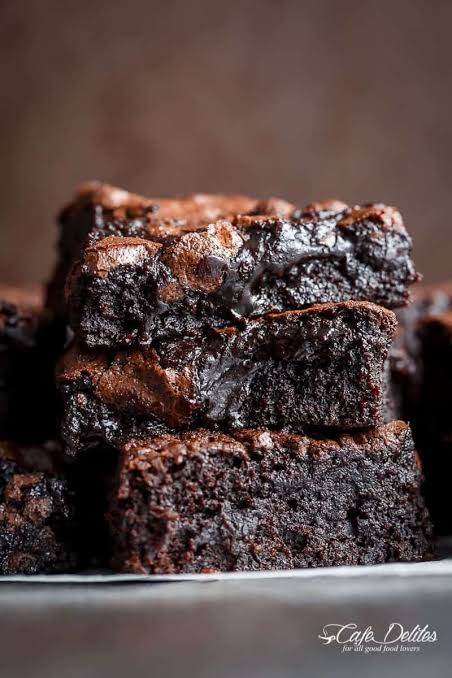

Say goodbye to box mixes forever. This effortless, one-bowl recipe yields the ultimate fudgy brownie: ultra-dense, intensely chocolatey, and topped with that coveted, paper-thin crinkle crust. Packed with chocolate chips for a double dose of decadence, these brownies are thick, chewy, and take less than 10 minutes to prep.